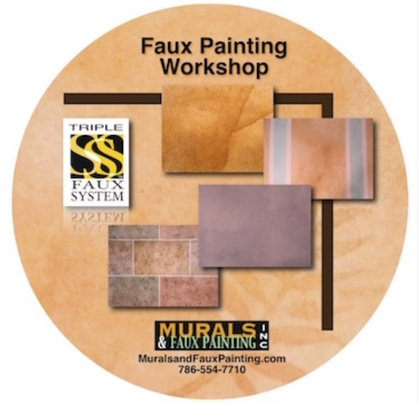
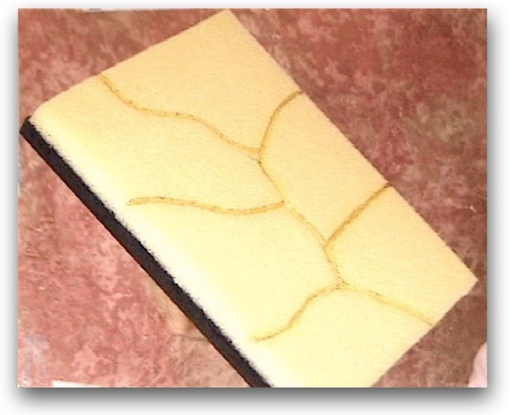
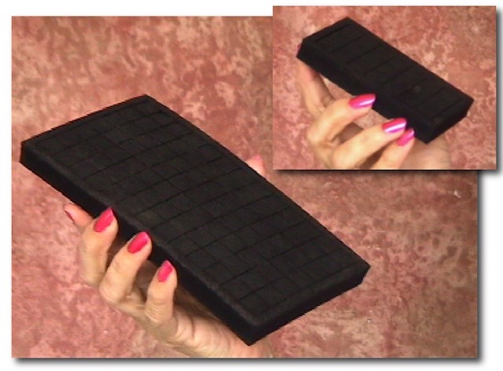
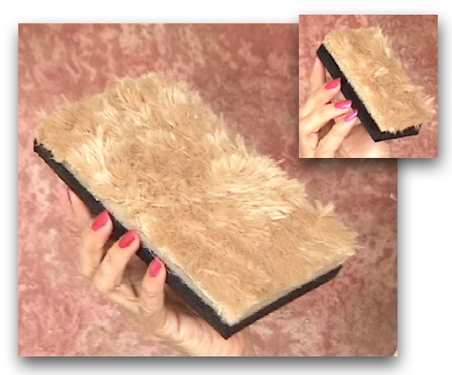
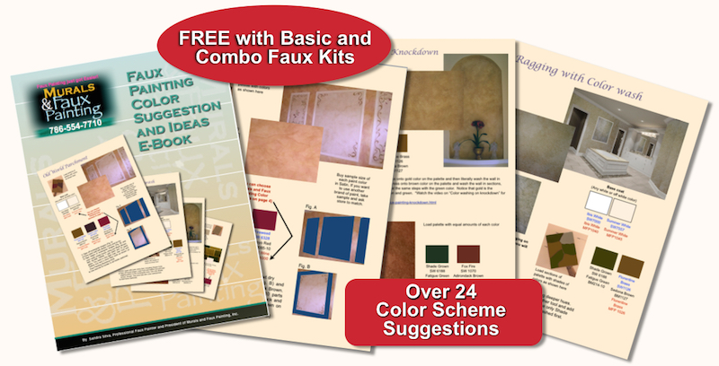
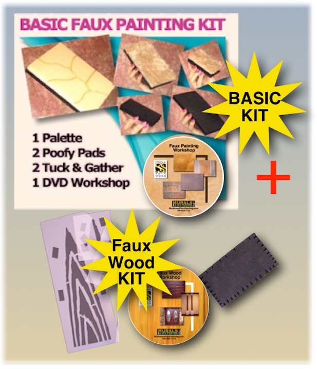

* Now you can choose to receive DVD or view online with our E-DVD. Make your choice on drop down
menu in the store for amy kit.
*FREE Color Suggestions and Idea E-Book which includes the formulas for paint colors for Sherwin
Williams and Valspar - a $40 value
*FREE Business Booklet

With this faux painting DVD (or E-DVD online*) you can easily learn how to paint 10 different finishes like the Old World Parchment, Color Washing, Sponging, Ragging and even stenciling in MULTIPLE COLORS in the comfort of your own home. There are step by step instructions that are easy to follow. *If you prefer to watch online, choose E-DVD, on the drop down menu of any kit, in the store.

This faux painting palette is the most valuable tool on the market and it should be part of everyone's supplies. You will be amazed how easy it is to apply multiple colors on the wall.

With the Tuck and Gather tool you can add unlimited textures so easily. Just gather materials and tuck them into the slits. Go to the link in red letters to see pictures of various walls faux painted with these innovative tool.

The Poofy Pad is a great faux painting tool that makes blending multiple colors a breeze. It fits perfectly in your hand and is lightweight so your hands don't get tired or cramped like they can when hold a balled up piece of cheese cloth.

For a limited time...Order any of our Faux Painting Kits today and get a FREE Color Suggestion E-Book as a .pdf file that will be emailed to you. You can view it on your computer or download. It is loaded with pictures and ideas using the various faux finishing techniques you will learn how to paint.
We have other kits available and have bundled some of them together for great savings to you.

With our Basic and Faux Marble Kit you get all the tools in the Basic Kit plus a Faux Marble DVD or E-DVD* to learn how to faux paint marble. *NOTE - Choose from drop down menu in the store for this kit.
Step by step instructions for different types of marble - Breccia, Carrara, Alabaster, Honed Marble and Black Marble.
It includes a set of pigeon feathers to painting veins.
Also includes a Marble Guide sheet to help you in placing your veins. It is a .pdf file that will be emailed to you.

With our Basic and Faux Wood Kit you get all the tools in the Basic Kit plus a Faux Wood DVD or E-DVD* to learn how to faux paint different types of wood. *NOTE - Choose from drop down menu in the store for this kit.
Includes Faux Wood Guide to help you learn how to paint your grain lines.
Also includes Faux Wood Color Guide with formulas for various paint colors from Sherwin Williams and Valspar.

Includes Basic DVD kit